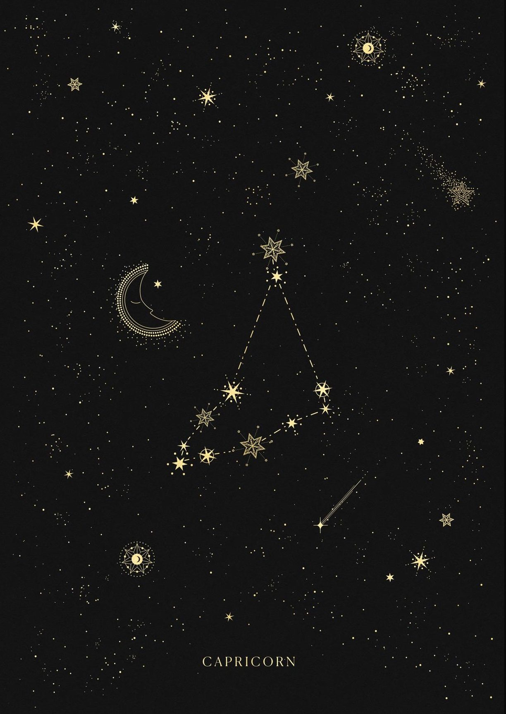

your sun is in...
capricorn
The Mountain Goat

Characteristics of a Capricorn
* honest
* practical
* loyal
* disciplined
* family-oriented
* fearless
* willful
* honest
* practical
* loyal
* disciplined
* family-oriented
* fearless
* willful
Sun Signs
Just as the sun is the center point of our solar system, the sun signs represent the center aspects of a person. Your sun sign is one of twelve zodiacs that is based on the position of the Earth in relation to the sun on the day you were born. Because the sun has the strongest pull on the earth, sun signs influence people the most. Therefore, your sun sign can tell you the core characteristics of who you are and how you express yourself to the world.

Element - Earth
Each sign is represented by one of four elements: Fire, Earth, Air, or Water. The elements represent a ruling quality that the three signs within this element all share.
Capricorn Celebrities
Michelle Obama
Born: January 17th, 1964
Denzel Washington
Born: December 28th, 1954
Jared Leto
Born: December 26th, 1971
Betty White
Born: January 17th, 1922
Kit Harington
Born: December 26th, 1986
Ruling Planet:
Saturn rules responsibilities, ambitions, and fears
The ruling planet of a sign determines many of its associated character traits. Saturn governs responsibilities and structure, which, in conjunction with their practicality as an earth sign, makes capricorns very disciplined and hard-working by nature. It also is the planet of ambition, which translates into their goals being very long-term and planned out. As Saturn also rules fears, Capricorns have a strong understanding of their limits, but can still be quite brave in the face of uncertainty.
The Sign's Quality:
A sign's quality correlates strongly to their relation to the seasons. The cardinal signs all mark the start of the seasons; because of this, they are often referred to as reacting signs. As a reacting sign, capricorns are often known as the leaders, using their new ideas and originality to boost them further along in the world. As their sign represents the start of winter, however, this strong-mindedness can sometimes translate into chilliness, since they often don't let anything stand in their way.
Cardinal
capricorns are falsely stereotyped as
condescending
when in reality they are ambitious and focused
listen to your daily horoscope on spotify